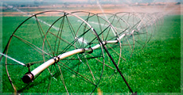

Agro Technology

- Studies on Pervaporation for Recovery of Natural Aroma Compound: Studies on Pervaporation for Recovery of Natural Aroma Compound
- Aroma compounds are widely used as additives in many products (food, pharmacy and cosmetics). Most industries applied extraction and distillation to recover aroma compounds from natural sources.
- Christianity is the predominant religion in Nagaland, yet each tribe annually celebrates its respective traditional festival connected
- Festival highlights include the Traditional Naga Morungs Exhibition and sale of Arts and Crafts, Food Stalls, Herbal Medicine.state of Nagaland is inhabited by 16 major tribes.

- Moldovan agriculture becomes more competitive with modern irrigation systems, hence we use the modern technology for best results
- The Republic of Moldova has inherited more than 78 centralized irrigation systems. According to estimates by the competent authorities in the area, we are currently irrigating a small percentage of the total land area.
Quality standards:
01
The Central Product Classification (CPC)
Developed and maintained by the United Nations Statistics Division.
02
Harmonized Commodity Description and Coding System (HS)
Trade classification most widely used in the world.
03
Coordinating Working Party on Fishery Statistics (CWP)
Provides a mechanism to set up standards relating with fishery and aquaculture statistics.
FAO develops, implements and promotes international statistical standards, methodological guidelines and tools.
In collecting, analysing and disseminating data. In order to promote international consistency and comparability of statistics across countries, it provides national statistical offices with internationally recognized definitions, concepts and classifications.